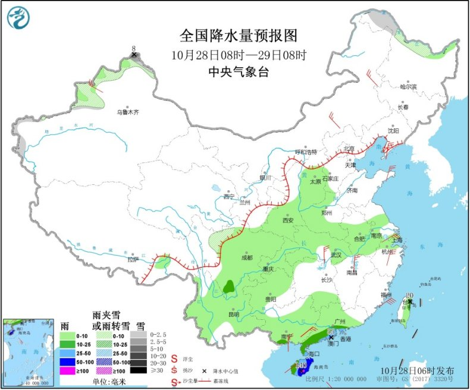
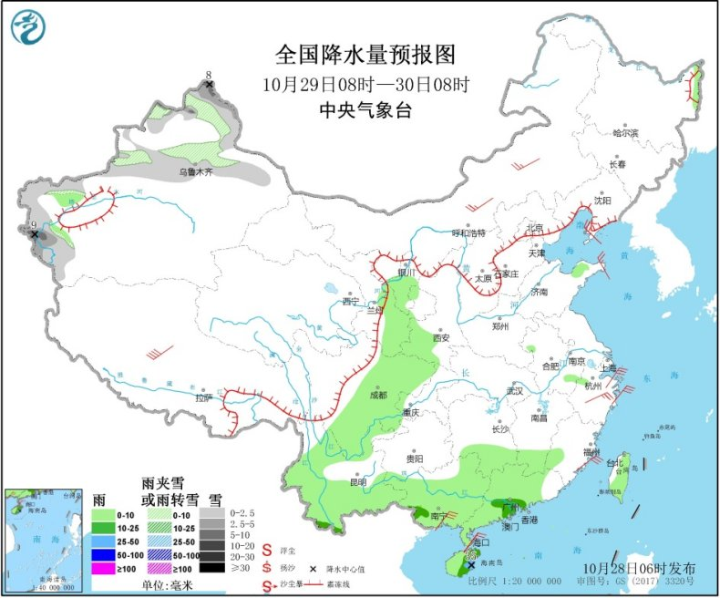
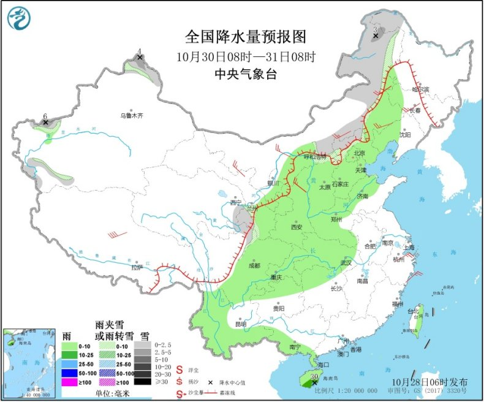

昨日，青海东部、甘肃中东部、宁夏南部等地降雪（雨）或雨夹雪2～9毫米，宁夏固原10～13毫米。今5时较昨5时，华北东部和南部、东北地区中南部及陕西中部等地降温4～8℃，局地降温超过10℃。受“莫拉菲”影响，海南岛东南部降大雨或暴雨，海南岛出现6～8级阵风、局地9～10级。
今年第18号台风“莫拉菲”（强台风级）的中心今天（28日）早晨5点钟位于越南广义省东偏南约205公里的南海中西部海面上，就是北纬14.2度、东经110.4度，中心附近最大风力有14级（42米/秒），中心最低气压为955百帕，七级风圈半径350～500公里，十级风圈半径100～150公里，十二级风圈半径70～80公里。
预计，“莫拉菲”将以每小时25公里左右的速度向西偏北方向移动，将于今天上午在越南广南省到平定省一带沿海登陆（台风级或强台风级，12～14级，35～42米/秒），登陆后强度迅速减弱。
受“莫拉菲”和冷空气的共同影响，28日08时至29日08时，台湾海峡、巴士海峡、南海西部和东北部、北部湾、琼州海峡、中沙群岛西部、西沙群岛及海南岛沿海将有7～8级大风，其中南海中西部和西南部的偏北海域风力可达 9～10级 ，“莫拉菲”中心经过的附近海域风力有11～14级、部分海域阵风可达15～16级。海南岛中东部有大到暴雨，局地大暴雨（100～140毫米）。中央气象台10月28日06时继续发布台风蓝色预警。 预计，10月29日至30日，受中等强度冷空气影响，新疆、西北地区东部、内蒙古西部将出现大风降温天气，气温普遍下降4～6℃，局地降温8℃以上。上述地区将出现4～6级风，新疆山口地区、内蒙古西部风力可达7级。新疆东部和南疆盆地、内蒙古西部局地有沙尘天气。新疆北部局地将有中到大雪。
10月28日08时至29日08时，新疆北疆北部和伊犁河谷、黑龙江西北部、川西高原北部等地部分地区有小雪或雨夹雪，局地有中到大雪（5～8毫米）。西北地区东部、华北西部、黄淮西部、江汉、江淮、西南地区大部、华南大部等地部分地区有小到中雨，其中，广东西南部沿海、海南岛中东部等地部分地区有大到暴雨或大暴雨（100～140毫米）。新疆伊犁河谷、内蒙古中东部、江南北部、华南南部沿海等地部分地区有4～6级风（见图1）。

图1 全国降水量预报图（10月28日08时-29日08时）
10月29日08时至30日08时，新疆北疆和南疆西部山区等地部分地区有小雪或雨夹雪，局地有中到大雪（5～9毫米）。西北地区东部、四川盆地、川西高原、云南大部、江南南部、华南大部、台湾岛等地部分地区有小到中雨，其中，海南岛东部局地有大雨（25～35毫米）。西藏、内蒙古中部、浙江中东部、华南南部沿海等地部分地区有4～6级风，其中，西藏北部局地有6～7级风（见图2）。

图2 全国降水量预报图（10月29日08时-30日08时）
10月30日08时至31日08时，内蒙古中东部、黑龙江西北部、新疆北疆北部和南疆西部山区、青海东部、甘肃南部等地部分地区有小雪或雨夹雪，局地有中到大雪（5～6毫米）。西北地区东部、华北大部、内蒙古东部、东北地区西部、黄淮大部、江汉、西南地区大部、华南南部等地部分地区有小到中雨，局地大雨。内蒙古、西北地区中东部、华北北部、东北地区西部、西藏等地部分地区有4～6级风，局地有6～7级风（见图3）。

图3 全国降水量预报图（10月30日08时-31日08时）